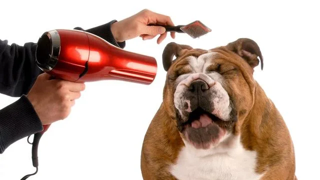

Когда вы впервые приобретаете щенка, необходимо взять на вооружение большое количество информации. Однако если вы уделите достаточно времени тому, чтобы с самого начала понять потребности вашего питомца, это обеспечит физическое и эмоциональное здоровье вашей собаки в течение всей ее жизни.
Существует ряд факторов, влияющих на здоровье и благополучие вашей собаки — это в первую очередь ее порода и возраст. В связи с этим важно, чтобы все, что вы делаете, начиная с удовлетворения пищевых потребностей и заканчивая физическими упражнениями и уходом за шерстью, рассматривалось с учетом особенностей вашего питомца. Однако есть ряд потребностей, характерных для всех собак, которые необходимо учитывать, чтобы животные были здоровыми и могли успешно адаптироваться в семье.
Физическая активность
Любой собаке необходима физическая активность, но уровень и характер нагрузок должны учитывать возраст, размеры и породу животного.
-
Проследите за тем, чтобы у собаки было место для физической активности: прогулки с собакой не должны рассматриваться просто как возможность быстро вывести животное в туалет.
-
Понемногу и часто: помните, что у средних, крупных и очень крупных собак период роста более продолжителен, чем у более мелких. В течение этого периода развиваются их кости и суставы. В связи с этим с такими собаками не следует преодолевать большие расстояния или заниматься определенными видами спорта, пока они не достигнут более взрослого возраста. Для таких собак лучше выбрать более частые, но менее интенсивные сеансы физических нагрузок.
-
Выделите время для игры: для собаки игра — это разновидность естественной физической активности, которая помогает в психологическом развитии животного. Игра полезна для собаки по нескольким различным причинам: вы проводите время с вашим питомцем, укрепляя эмоциональные связи между вами; контролируете его вес, поддерживаете его жизненный тонус и здоровье сердечно-сосудистой и иммунной систем.
Условия содержания
Щенки очень восприимчивы к происходящему вокруг, и отрицательный опыт будет иметь длительный эффект. Поведенческое развитие щенка проходит несколько этапов, включая период социализации, который начинается в возрасте четырех недель и продолжается, пока щенку не исполнится 14 недель.
Период борьбы со страхом и период социализации протекают одновременно, поэтому любой психологический стресс, произошедший в это время, может иметь длительные отрицательные последствия. В связи с этим важно пристально следить за реакциями щенка на воздействие факторов окружающей среды с самого первого дня его появления в вашем доме.
- Обустройте для щенка отдельное место для сна. Обязательно предоставьте щенку отдельное место для сна, где он сможет уединиться и будет чувствовать себя в безопасности.
- Создайте окружающую обстановку, насыщенную стимулирующими факторами. Например, щенкам нравятся большие картонные коробки, в которых можно спрятаться, и резиновые игрушки, которые можно разгрызать. Важно следить за тем, чтобы игры щенка всегда проходили под наблюдением.
- Знакомьте вашего питомца с новой окружающей обстановкой постепенно. Если вы живете в городе, вы должны постепенно знакомить щенка с явлениями городской жизни, с которыми ему придется столкнуться, например с автомобилями, эскалаторами, лифтами, поездами, трамваями или автобусами.
- Приучайте щенка оставаться в одиночестве. Щенок должен научиться время от времени оставаться один дома.
- Познакомьте вашего питомца с другими собаками. Одним из условий успешной социализации щенка является общение с собаками и другими животными, поэтому ваш питомец должен принимать участие в семейных прогулках как можно чаще.
- Выгуливайте щенка. Не откладывайте прогулки со щенком. Он должен начать исследовать окружающую обстановку с двухмесячного возраста.
Кормление
Как и в случае с физической нагрузкой, пищевые потребности щенка меняются по мере его роста. Вначале щенков необходимо кормить несколько раз в день небольшими порциями, постепенно сокращая количество кормлений до одного или двух раз в день. Размеры и порода собаки также влияют на ее пищевые потребности, так как одни собаки в большей степени предрасположены к нарушениям пищеварения, чем другие. У собаки всегда должен быть доступ к воде. Важно также не перекармливать вашего питомца.
Если вы точно не знаете, какое количество корма необходимо вашей собаке или каким образом разные этапы роста влияют на количество потребляемого корма, проконсультируйтесь с ветеринарным врачом. Он объяснит, как создать оптимальные условия для роста вашего питомца и как не допустить развития ожирения и повышения нагрузки на формирующиеся суставы.
В основном корм обеспечивает животное энергией, но он также участвует в строительстве клеток организма и поддержании их функционирования, помогая предотвращать нарушения пищеварения, проблемы с кожей, зубами, суставами, а также проблемы, связанные со старением. Питательный корм, отвечающий требованиям здорового питания, содержит правильное количество питательных веществ.
- Не переводите питомца на новый корм резко. Чтобы не навредить пищеварительной системе щенка, в первые дни в новом доме давайте ему такой же корм, каким его кормили раньше. Если вы хотите поменять корм, делайте это осторожно в течение недельного переходного периода, смешивая старый и новый корм в различных пропорциях.
- Давайте вашему питомцу корм, соответствующий его возрасту. Для щенков разработаны специальные продукты, которые идеально подходят для удовлетворения потребностей животных в период роста. Чтобы создать оптимальные условия для роста щенка, следуйте рекомендациям ветеринарного врача.
- Установите распорядок дня. Собаки — стайные животные, поэтому они нуждаются в точных иерархических маркерах. Кормите щенка каждый день в одном и том же месте и в одно и то же время после того, как вы и ваша семья уже поели. Это позволит ему понять, что вы занимаете доминирующее положение в доме. После кормления по возможности не допускайте, чтобы щенок активно играл в течение одного–двух часов.
- Проследите за тем, чтобы лакомства были исключением из правила, а не правилом. Лакомства необходимо давать в редких случаях — это поможет собаке сохранить нормальный вес. Сахар и шоколад запрещены, поскольку шоколад может быть ядовитым для собак. В качестве вознаграждения во время дрессировки животного можно использовать низкокалорийные крокеты.
Уход за шерстью и здоровье
Регулярный уход за шерстью должен войти в привычку. Это поможет поддерживать здоровье кожи и шерсти щенка, а также позволит сблизиться с вашим питомцем. Кроме того, уход за шерстью повышает вероятность обнаружения различных отклонений и патологий (например, заражение внешними паразитами, кожные заболевания или зоны, вызывающие дискомфорт) на ранней стадии. Большинству собак нравятся процедуры по уходу за шерстью, если они к ним привыкли в раннем возрасте. Однако начинать никогда не поздно!
- Начните ухаживать за зубами собаки в молодом возрасте. Это позволит щенку привыкнуть к чистке зубов с использованием зубной щетки и зубной пасты, специально предназначенной для собак. Попробуйте чистить зубы щенка несколько раз в неделю.
- Запишите щенка на вакцинацию. Вакцинация помогает избежать заражения инфекционными заболеваниями, которые иногда могут оказаться смертельными. Некоторые вакцины являются обязательными, другие же носят рекомендательный характер. Программу вакцинации щенков обычно начинают в возрасте от шести до восьми недель.
- Проконсультируйтесь с ветеринарным врачом по поводу обработки питомца от гельминтов. У щенков часто бывают гельминты, поэтому до достижения ими возраста шести месяцев рекомендуется проводить такие обработки каждый месяц, а затем — один раз в шесть месяцев. Ветеринарный врач составит правильный график дегельминтизации для вашего щенка, которого следует придерживаться.
- Проконсультируйтесь с ветеринарным врачом по поводу защиты от блох. Обязательно защитите своего щенка от блох и клещей. Чтобы защита подействовала должным образом, необходимо обработать не только собаку, но и среду, в которой содержится животное. Проконсультируйтесь с ветеринарным врачом.
- Рассмотрите возможность стерилизации или кастрации вашего питомца. Решение о стерилизации или кастрации является очень важным, и его необходимо тщательно обдумать. Важно взвесить любые потенциальные преимущества стерилизации или кастрации по сравнению с возможностью получения потомства от вашей собаки в будущем.
Дрессировка
Развивать хорошее поведение и послушание нужно с раннего возраста. Дрессировку щенка следует начинать как можно раньше — в возрасте, когда щенок легче всего обучается.
Для вашего удобства и спокойствия окружающих ваша собака должна усвоить основные правила поведения в обществе. Без колебаний обращайтесь за помощью к специалистам по поводу дрессировки вашей собаки. Существует множество клубов собаководства и школ для щенков, в которых вам окажут необходимую помощь.
- Приучение к туалету. Когда в вашем доме появится щенок, он, скорее всего, еще не будет приучен к туалету. Дрессировка требует времени и терпения. Никогда не наказывайте и не ругайте щенка, с которым произошел конфуз. Вместо этого находите способы не допустить возникновения ситуаций, когда щенок ходит в туалет в доме.
- Учите отзываться на кличку с раннего возраста. С самого начала произносите кличку щенка медленно и четко, чтобы привлечь его внимание и связать кличку с каждой командой. Дождитесь момента, когда щенок насторожен, чтобы ему было легче отреагировать, и подзовите питомца, чтобы выработать навык послушания.
- Постепенно приучайте щенка к автомобилю. Приучайте щенка к поездкам на автомобиле с раннего возраста, чтобы они не вызывали у него беспокойство. Прежде чем отправиться в длительную поездку, совершите несколько коротких поездок вместе со щенком.
Когда у вас появляется щенок, необходимо принимать во внимание большое количество информации о содержании, воспитании и уходе за ним, включая все изначальные нюансы, необходимые для обеспечения физического и эмоционального здоровья вашего питомца. Однако если с самого начала все делать правильно, вам и вашей собаке будет намного легче в дальнейшем. В случае каких-либо сомнений вы можете обратиться за советом и поддержкой к ветеринарному врачу.